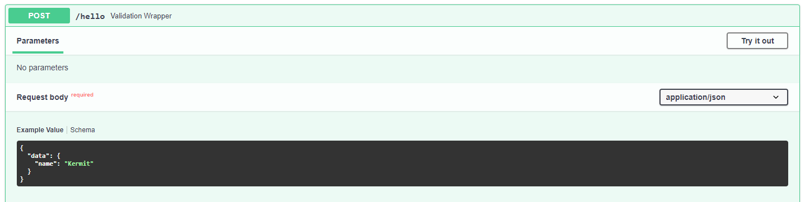

Typing in the SDK¶
The Software Development Kit supports type hints to add validation to the resulting API as well as well-defined json schemas for the automatic documentation. In this tutorial we will see how we can make use of this to make the API and interactive docs easier to use.
Note
MVI entrypoints communicate with json schemas and do therefore only support json-compatible input and output, such as numericals, strings, lists and dictionaries.
Creating an Input Model¶
So far we have seen two example services, the hello service from
Creating Your Own service, which had a hello() entrypoint
that we defined like
from mvi import service
@service.entrypoint
def hello(name: str) -> str:
...
pass
And we’ve seen the iris service from Deploying Machine Learning Models which had the
predict() entrypoint that was defined like this
from mvi import service
@service.entrypoint
def predict(data: dict) -> list:
...
pass
In both of these examples we have used standard python types as type hints. This
will make sure that only strings can be used as input for hello() and
only dictionaries in predict(). But a dictionary can contain many types
of data, and usually only one (or a few) ways are correct. To simplify the life
of the user, we can define something called a data model, that we create by
extending the BaseModel class from
pydantic. For the iris service
example it would be
from pydantic import BaseModel
from typing import List
class IrisData(BaseModel):
sepal_length: List[float]
sepal_width: List[float]
petal_length: List[float]
petal_width: List[float]
The BaseModel helps the API to know what format the input json should
conform to. If the request body of your API call does not match the model it will
send a 422 HTTP-error with an error description.
Let’s create a new service that will take data in a schema similar to
IrisData and respond with the sum of its rows:
>>> mvi init
Active host: http://your-host
project_name [my_project]: row_sum_service
Then in service.py write the following code:
import logging
from mvi import service
import pandas as pd
from pydantic import BaseModel
from typing import List
logger = logging.getLogger(__name__)
class DataForm(BaseModel):
col1: List[float]
col2: List[float]
col3: List[float]
@service.entrypoint
def calculate(data: DataForm) -> list:
data = data.dict()
df = pd.DataFrame(data)
logger.info(f"Recieved data: \n{df}")
row_sum = df.sum(axis=1)
logger.info(f"Row sums: {row_sum}")
return row_sum.to_list()
if __name__ == '__main__':
service.run()
And add pydantic and pandas to requirements.txt:
va-mvi
pydantic
pandas
And deploy the new service:
>>> mvi deploy row_sum 1.0.0 ./row_sum_service
Active host: http://your-host
Deploying service...
Service deployed successfully
MAIN NAME VERSION STATUS RUNNING
------ ------- --------- -------- -----------------------------------
* row_sum 1.0.0 running Running (since 2020-11-24 10:11:37)
Now if we head on to the automatic documentation at http://your-host/services/row_sum/docs you should see the following:

We can see that now, we have an example input ready for us in the schema view, which makes testing with the interactive docs much faster, but the most important feature we get is validation of the input. Let’s try to change the value of “col1” to “string”:
{
"data": {
"col1": "string",
"col2": [
0
],
"col3": [
0
]
}
}
And we get the response 422 Error: Unprocessable Entity:
{
"detail": [
{
"loc": [
"body",
"data",
"col1"
],
"msg": "value is not a valid list",
"type": "type_error.list"
}
]
}
Which tells us that the value of “col1” in “data” in the request body is not a valid list. If we had used no type hinting or instead used a dictionary we would not get this level of control of what data we accept into the entrypoint, which invites many bugs due to data validation issues.
Custom Validation¶
We’ve seen how a data model can be used to ensure that the input data types are
validated, but sometimes it’s not strict enough. Let’s take the hello service
as an example this time. The hello() function takes any string as it’s
input <name> and then returns “Hello <name>”. But we do not want the user to input
numbers as name, so we want to add validation for that, so we create a base model
for the the user name:
from pydantic import BaseModel, validator
class NameModel(BaseModel):
name: str
@validator("name")
def must_not_be_numeric(cls, name):
if name.isnumeric():
raise ValueError(
"Names cannot be numeric!"
)
return name
The validator() decorator from pydantic allows us to define classmethods
that can run arbitrary code on the data input and raise exceptions if it violates
the desired format.
On the input name “123”, which is a number, we expect the validation to kick in:
{
"data": {
"name": "123"
}
}
And we get a response 422 Error: Unprocessable Entity, which is exactly what we wanted:
{
"detail": [
{
"loc": [
"body",
"data",
"name"
],
"msg": "Names cannot be numeric!",
"type": "value_error"
}
]
}
Schema Example¶
Last thing we want to show is how to add example inputs for the documentation to
speed up testing. To do this we create a local class Config
within the data model:
class NameModel(BaseModel):
name: str
class Config:
schema_extra = {
"example": {
"name": "Kermit"
}
}
This would change the standard value in the schema example to “Kermit”.
{kind=link}